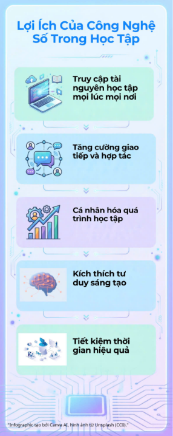

Lợi ích công nghệ số
Infographic giới thiệu những lợi ích thiết thực của công nghệ số trong học tập, công việc và cuộc sống.
Infographic

Infographic giới thiệu những lợi ích thiết thực của công nghệ số trong học tập, công việc và cuộc sống.
